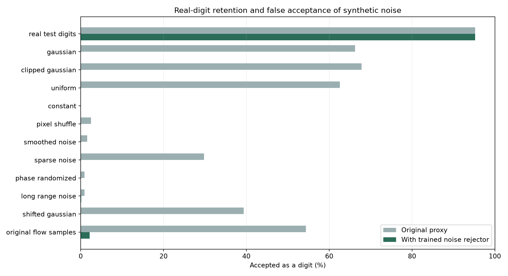
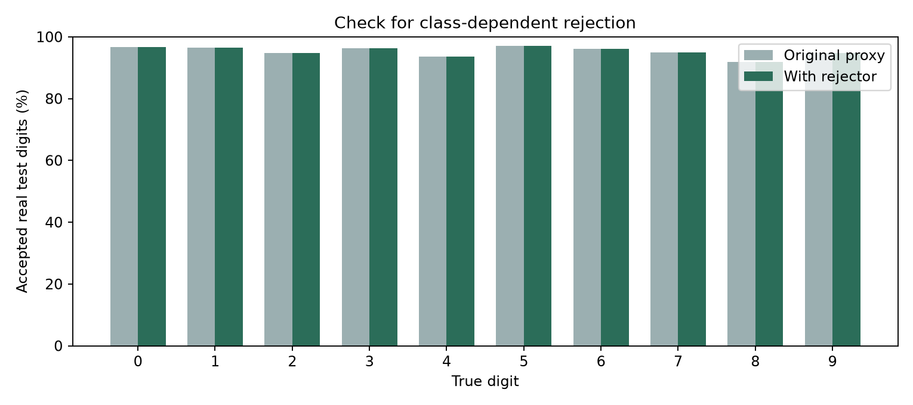
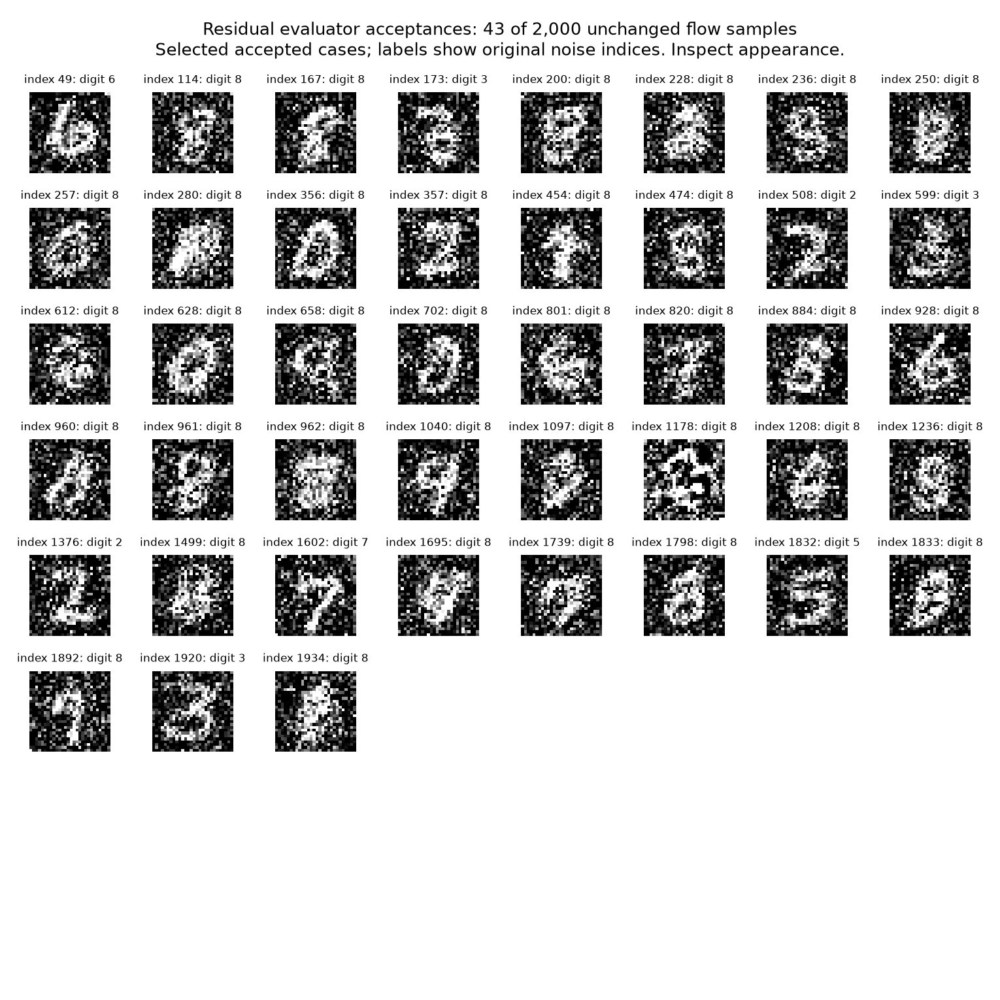

Matched before/after images
Same first 64 sample indices. Green labels indicate acceptance; × indicates rejection. Digit labels still come from the unchanged classifier.
FLOW STUDY · EVALUATOR REPAIR · MEASURED DATA
Frozen ten-way digit classifier + separately trained binary noise rejector. Generator weights are unchanged.
completed · 74.4 seconds on one GPU · threshold 0.5 selected on validation.
Readable report · Raw measurements · Protocol


These selected cases still passed the evaluator. They demonstrate why acceptance is a proxy for quality.

Higher acceptance is better for real digits; lower is better for noise. Novel noise families were not used for training or threshold selection.
| Dataset | N | Original accepted | With rejector | 95% sampling interval |
|---|---|---|---|---|
| real test digits real | 10,000 | 95.25% | 9,525 (95.25%) | 94.82%–95.65% |
| gaussian trained_family_new_draws | 10,000 | 66.23% | 0 (0.00%) | 0.00%–0.04% |
| clipped gaussian trained_family_new_draws | 10,000 | 67.81% | 0 (0.00%) | 0.00%–0.04% |
| uniform trained_family_new_draws | 10,000 | 62.60% | 0 (0.00%) | 0.00%–0.04% |
| constant trained_family_new_draws | 10,000 | 0.00% | 0 (0.00%) | 0.00%–0.04% |
| pixel shuffle trained_family_new_draws | 10,000 | 2.49% | 0 (0.00%) | 0.00%–0.04% |
| smoothed noise trained_family_new_draws | 10,000 | 1.56% | 0 (0.00%) | 0.00%–0.04% |
| sparse noise trained_family_new_draws | 10,000 | 29.76% | 0 (0.00%) | 0.00%–0.04% |
| phase randomized unseen_family | 10,000 | 0.91% | 7 (0.07%) | 0.03%–0.14% |
| long range noise unseen_family | 10,000 | 0.89% | 10 (0.10%) | 0.05%–0.18% |
| shifted gaussian unseen_family | 10,000 | 39.35% | 0 (0.00%) | 0.00%–0.04% |
| historical gaussian 512 historical_sanity | 512 | 62.89% | 0 (0.00%) | 0.00%–0.74% |
| blank black constant_sanity | 1 | 0.00% | 0 (0.00%) | not reported |
| blank zero constant_sanity | 1 | 0.00% | 0 (0.00%) | not reported |
| blank white constant_sanity | 1 | 0.00% | 0 (0.00%) | not reported |
| original flow samples generator_re_evaluation | 2,000 | 54.40% | 43 (2.15%) | not reported |
Same first 64 sample indices. Green labels indicate acceptance; × indicates rejection. Digit labels still come from the unchanged classifier.
This tests one trained evaluator against the listed distributions. Zero observed false accepts does not imply zero population risk. Realness scores do not certify arbitrary generated images; inspect residual errors and keep the generator feasibility gate.